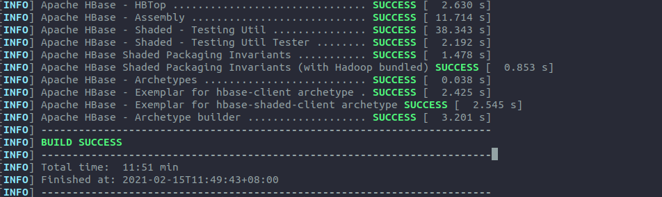
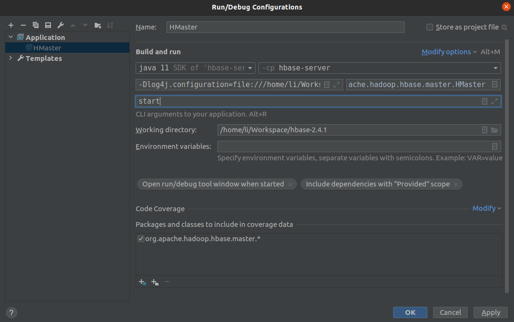
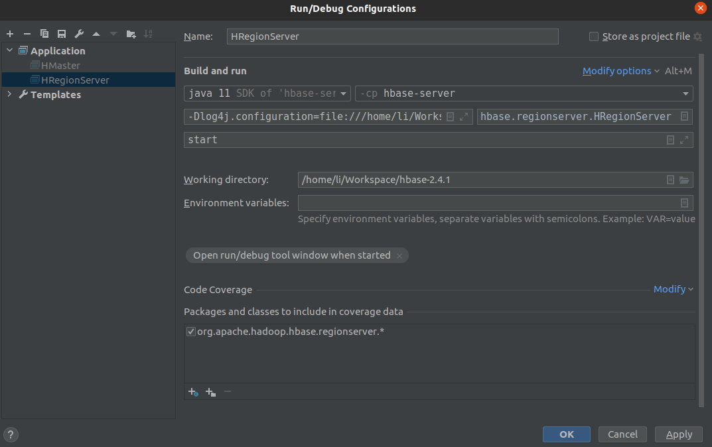
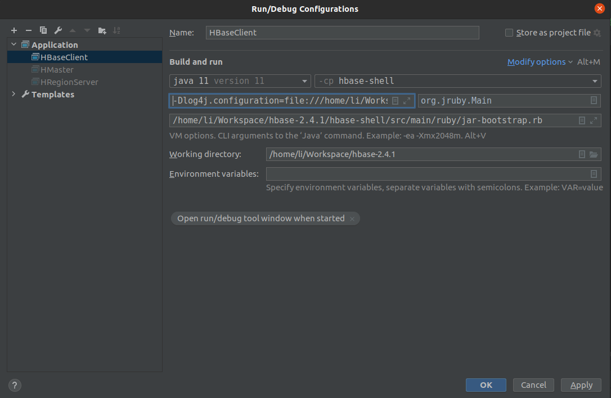
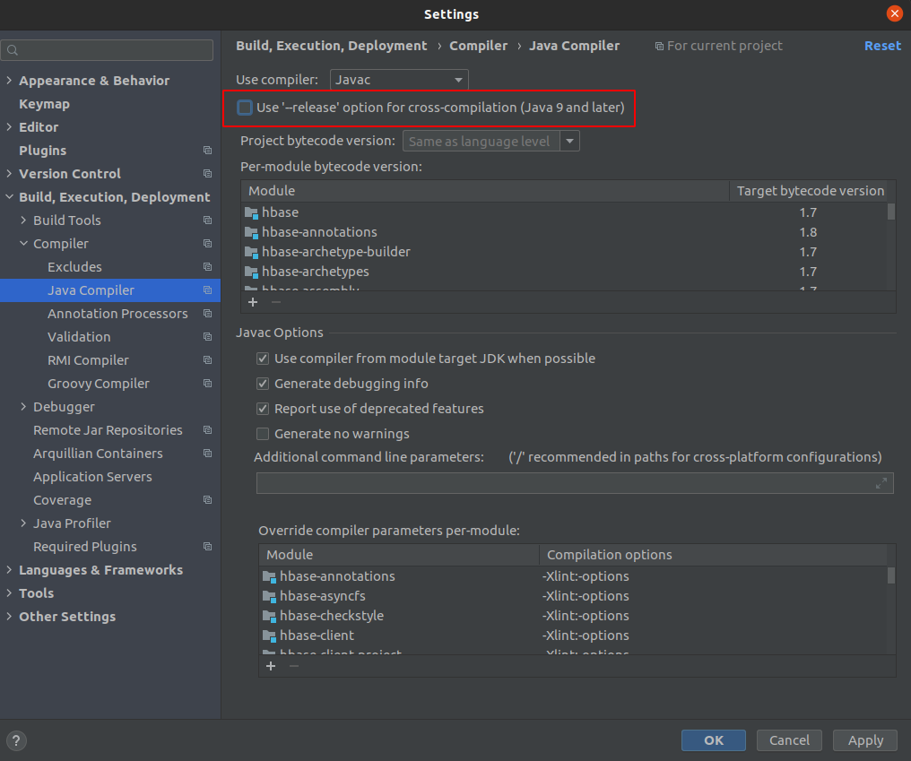

环境说明
| 参数 | 说明 |
|---|---|
| OS | Ubuntu 20.04.2 LTS |
| CPU | Intel(R) Core(TM) i5-4210H CPU @ 2.90GHz |
| MEM | 12177392 KB |
下载准备
下载源码
这里使用的是 HBase v2.4.1
下载JDK
这里使用的是 Jdk 11
下载Maven
这里使用的是 Maven 3.6.3
下载Zookeeper
这里使用的是 Zookeeper 3.6.2
下载Hadoop
这里使用的是 Hadoop 3.2.2
环境准备
配置环境变量
|
|
配置并启动 Zookeeper
配置 Zookeeper
|
|
启动 Zookeeper
|
|
配置并启动 Hadoop
配置 Hadoop
hdfs-site.xml
|
|
core-site.xml
|
|
hadoop-env.sh
|
|
启动 Hadoop
|
|
编译 HBase
|
|

IDEA 导入
配置 HBase
hbase-site.xml
|
|
运行 HMaster

浏览器打开 Master UI 查看状态
参数
| 参数名称 | 参数值 |
|---|---|
| vm | -Dlog4j.configuration=file:///home/li/Workspace/hbase-2.4.1/conf/log4j.properties |
| main | org.apache.hadoop.hbase.master.HMaster |
| param | start |
运行 HRegionServer

浏览器打开 Master UI 查看状态
参数
| 参数名称 | 参数值 |
|---|---|
| vm | -Dlog4j.configuration=file:///home/li/Workspace/hbase-2.4.1/conf/log4j.properties |
| main | org.apache.hadoop.hbase.regionserver.HRegionServer |
| param | start |
运行 HBase Client

控制台查看状态
参数
| 参数名称 | 参数值 |
|---|---|
| vm | -Dlog4j.configuration=file:///home/li/Workspace/hbase-2.4.1/conf/log4j.properties |
| vm | -Dhbase.ruby.sources=file:///home/li/Workspace/hbase-2.4.1/hbase-shell/src/main/ruby |
| main | org.jruby.Main |
| param | /home/li/Workspace/hbase-2.4.1/hbase-shell/src/main/ruby/jar-bootstrap.rb |
遇到的问题
问题1
|
|
解决办法

问题2
|
|
解决办法
hbase-server/pom.xml
|
|
hbase-shell/pom.xml
|
|
问题3
|
|
解决办法
|
|